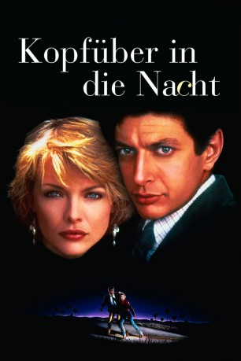

#10189 Kopfüber in die Nacht
Alternativ: Into the Night (Englischer Titel)
 
 IMDB-Wertung: 6.5 / 10
IMDB-Wertung: 6.5 / 10  Metascore: 0
Metascore: 0 
Ed Okin führt ein recht belangloses Leben, mal ganz davon abgesehen, dass er seine Ehefrau betrügt. Doch eines Tages trifft er Diana. Und auf einmal gehören Verfolgungsjagden, Morde und Diebstähle zu seinem Alltag.
Jahr: 1985
Dauer: 114 Minuten
FSK: 16
Land: USA Studio: Universal PicturesTonspuren: DD2.0 - ,
Untertitel: Deutsch,
Auflösung: 1080p (1920x1040) Größe: 7823 MB
Genre: Thriller, Drama, Komödie
Regisseur:  John Landis
John Landis
Drehbuch: Ron Koslow
Soundtrack: Ira Newborn
Darsteller:
 Jeff Goldblum als Ed Okin
Jeff Goldblum als Ed Okin Carmen Argenziano als Stan
Carmen Argenziano als Stan Dan Aykroyd als Herb
Dan Aykroyd als Herb David Cronenberg als Group Supervisor
David Cronenberg als Group Supervisor John Hostetter als Aerospace Engineer
John Hostetter als Aerospace Engineer- Richard Franklin als Aerospace Engineer
 Michelle Pfeiffer als Diana
Michelle Pfeiffer als Diana- Michael Zand als SAVAK
 John Landis als SAVAK
John Landis als SAVAK Jake Steinfeld als Larry
Jake Steinfeld als Larry- Waldo Salt als Male Derelict
 Bruce McGill als Charlie
Bruce McGill als Charlie- Dedee Pfeiffer als Hooker
 Rick Baker als Drug Dealer
Rick Baker als Drug Dealer- Kathryn Harrold als Christie
- Daniel Petrie als Kalijak Director
 Paul Mazursky als Bud Herman
Paul Mazursky als Bud Herman- Jonathan Lynn als Tailor
 Paul Bartel als Beverly Wilshire Hotel Doorman
Paul Bartel als Beverly Wilshire Hotel Doorman- Jim Bentley als Baccarat Dealer
- Houshang Touzie als Hamid
- Carl Perkins als Mr. Williams
- Don Siegel als Embarrassed Man
- Peggy McIntaggart als Shameless Woman
 Jim Henson als Man on Phone
Jim Henson als Man on Phone David Bowie als Colin Morris
David Bowie als Colin Morris Art Evans als Jimmy
Art Evans als Jimmy- Bud Abbott als Chick Young in 'Abbott and Costello Meet Frankenstein' (archive footage)
- Lou Costello als Wilbur Grey in 'Abbott and Costello Meet Frankenstein' (archive footage)
- Bela Lugosi als Count Dracula (archive footage)
- Lon Chaney Jr. als The Wolfman (archive footage)
- Amy Heckerling als Ships Waitress
- Roger Vadim als Monsieur Melville
- Reid Smith als Sheriff Peterson
 Lawrence Kasdan als Detective #2
Lawrence Kasdan als Detective #2 Richard Farnsworth als Jack Caper
Richard Farnsworth als Jack Caper Vera Miles als Joan Caper
Vera Miles als Joan Caper Irene Papas als Shaheen Parvici
Irene Papas als Shaheen Parvici- Patricia Gaul als Stewardess
 Clu Gulager als Federal Agent
Clu Gulager als Federal Agent- Jonathan Demme als Federal Agent
 Eddy Donno als L.A.P.D
Eddy Donno als L.A.P.D Carl Gottlieb als Federal Agent
Carl Gottlieb als Federal Agent- Alma Beltran als Cleaning Woman
- Ava Cadell als (scenes deleted)
- Cynthia Lea Clark als Dancer (uncredited)
 John Richard Petersen als Marine at Airport (uncredited)
John Richard Petersen als Marine at Airport (uncredited)- Dona Speir als Miss Western Europe (uncredited)
- Stacey Pickren als Ellen Okin
- Andrew Marton als Freeway Driver
Datei: X:\1985\Kopfüber in die Nacht (1985, FSK16, 1920x1040).mkv seit 18.12.2018
Festplatte: HD 1980-1986
 Es gibt insgesamt 43 Filme in der Gruppe '1985'
Es gibt insgesamt 43 Filme in der Gruppe '1985'